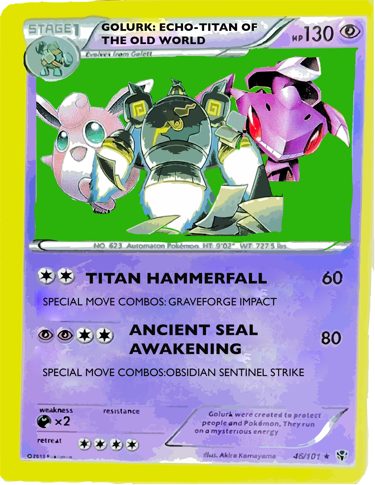
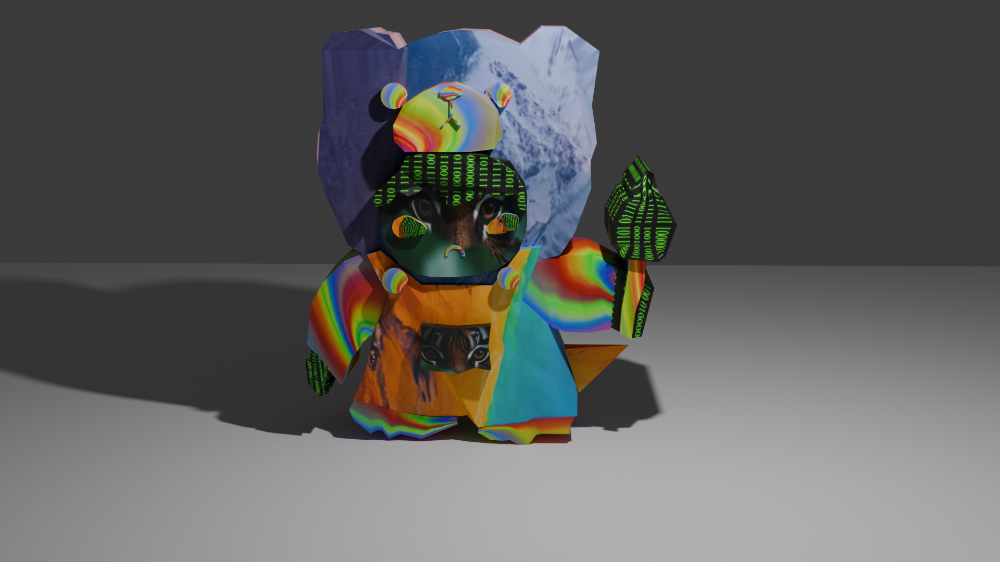

Building interfaces that
feel like art.
I’m a Graphic Designer who builds visual systems with clarity, rhythm, and purpose. I focus on layouts that feel balanced and alive, typography that communicates emotion, and compositions that guide the viewer with intention. My work blends structure and expression — using grids, contrast, and color to shape how people read, move, and feel through a design. I care about making visuals that aren’t just beautiful, but meaningful, thoughtful, and crafted with a designer’s eye for detail.

My Creative Journey
I shape visual systems that feel intentional — layouts that breathe, typography that carries weight, and compositions that guide the eye with purpose. Graphic design, to me, is the craft of giving structure to emotion. Every grid, every margin, every contrast decision is a way of directing how someone experiences a story.
Across years of designing for brands, interfaces, and editorial work, I’ve learned to treat the page like a living space. I build clarity through hierarchy, rhythm through spacing, and personality through color and form. My process is hands-on and iterative: sketch, refine, test, and push until the design feels both inevitable and alive.
Explore Workdesign tools
animation+ui tools
Case Studies & Experiments

Uncanny Valley
This project explores how the uncanny valley emerges inside the visual language of Pokémon cards — a space that blends nostalgia, character design, and highly stylized illustration. My goal was to examine why certain cards feel charming and alive while others slip into something slightly off: proportions that feel too perfect, expressions that hover between human and creature, or rendering styles that push realism just a little too far. Through close analysis and digital reconstruction, I studied how line weight, shading, color gradients, and compositional framing contribute to that subtle unease. I treated each card as a micro‑environment, breaking down how its design choices shape emotional response. The final work combines research, visual deconstruction, and original reinterpretations that highlight where familiarity ends and strangeness begins. This project is both an investigation and a creative experiment — a way of understanding how design can tiptoe between appealing and unsettling, even in a world as playful as Pokémon.

Quasi-Object
This project investigates the nature of a quasi‑object — a form that never settles into a single, stable identity but instead becomes “real” only through perception, camera position, and digital interaction. Using Blender, I will construct a 3D object whose meaning continuously shifts depending on how it is viewed, lit, or animated. Rather than functioning as a fixed asset, the object behaves like a mutable presence: part illusion, part structure, part performance. The goal is to create a digital artifact that exists between states, revealing how interaction and perspective generate its identity moment by moment.

Chronos Task Runner
A microcron task automation executor in vanilla JavaScript designed to scale with serverless environments.